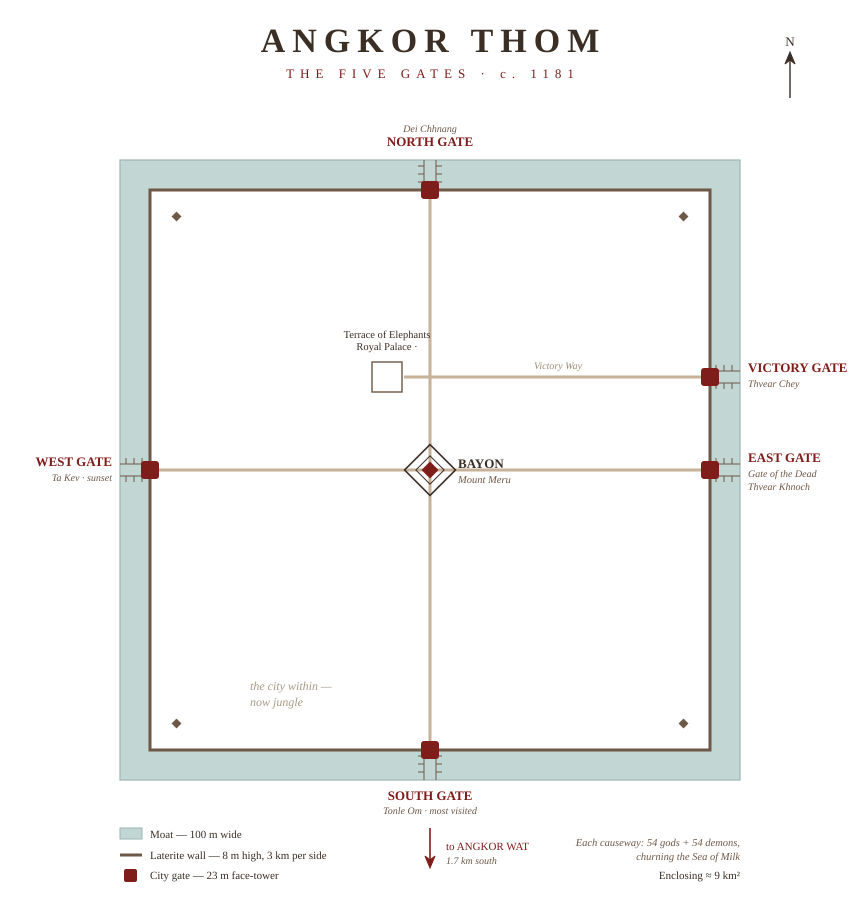

You feel Angkor Thom before you reach it. The road from Angkor Wat runs north through forest for a little under two kilometres, and then the trees fall away and you are facing a wall of stone faces — four of them, serene and enormous, gazing down each of the four directions at once. This is the South Gate, and it is only the doorway. Behind it lies the largest city the Khmer ever built.
Angkor Thom — "Great City" — was the last capital of the empire, raised by Jayavarman VII in the late twelfth century after the Chams sacked the old capital and taught him that even Angkor could fall. His answer was a fortress on a cosmic scale: a near-perfect three-kilometre square of laterite wall, eight metres high, ringed by a moat a hundred metres wide, enclosing nine square kilometres and a population that may have passed a hundred thousand. At the exact centre he set the Bayon, his state temple, its towers crowned with the same four-faced smile that watches from every gate.
The plan is not only defensive; it is a diagram of the universe. The Bayon stands in for Mount Meru, the mountain at the heart of the world. The walls are the ranges that ring it. The moat is the cosmic ocean. To pass through any gate is to cross from the world of men into the world of the gods — and the Khmer made that crossing literal.

Each gate is reached by a causeway, and each causeway is itself a sculpture. On the left march fifty-four devas — gods, with almond eyes and faint smiles; on the right, fifty-four asuras — demons, with bulging eyes and grimaces. Both rows grip the body of an enormous serpent and pull, frozen mid-heave in a tug-of-war that has lasted eight centuries. They are enacting the Churning of the Sea of Milk, the old myth in which gods and demons churn the ocean to draw out the elixir of immortality, using a serpent for their rope and a mountain for their paddle. Here the mountain is the Bayon, and the city is the thing being churned into being. One hundred and eight stone giants at every gate, turning the ocean at the threshold of the king's city.
The gates themselves are the same idea rendered in stone you can walk through. Each tower rises some twenty-three metres and wears four faces, one per direction — whether they are the bodhisattva Avalokiteshvara, the king himself, or guardians of the empire's corners, no one can quite agree. At the base, three-headed elephants reach down their trunks to pluck lotus from the water. The opening they frame is barely wide enough for a cart; eight hundred years ago, wooden doors closed it at night.
Five gates pierce the walls. Four sit at the cardinal points, each opening onto a road that runs dead straight to the Bayon. The fifth — the Victory Gate — breaks the symmetry, set on the eastern wall just north of the East Gate, feeding the Victory Way that ran to the royal palace, the road kings took home from war.
The South Gate is the one everyone meets first, and the most complete: closest to Angkor Wat, its causeway rebuilt in the mid-twentieth century, its rows of gods and demons the best preserved of any gate — though many you see now are reproductions, the originals lost to looters or carried off for safekeeping. It is magnificent, and it is mobbed; lovely in a photograph only if you can clear the tuk-tuks from the frame, which usually means arriving before seven.
The others reward the wanderer. The North Gate, opposite the old palace, takes traffic but little tourism. The West Gate, half-swallowed by forest, is the quietest of all and the finest at dusk, when the light comes low through the trees and the faces soften. And the East Gate — the Gate of the Dead, through which the city is said to have carried its corpses out — sits at the end of a rough, faintly eerie track, jungle pressing close, almost nobody there. It is my favourite. The faces are weathered to near-anonymity, the causeway giants tumbled and mossed, and you can stand beneath twenty-three metres of crumbling stone with the whole threshold of an empire to yourself.
A word on seeing it for yourself. Bayon is the headline, and its smiling towers earn every visitor they get — but the gates, the scale of the walls, and the jungle they enclose are every bit as rewarding, and almost no one gives them the hours they deserve. Rent a motorbike. A tuk-tuk will happily ferry you from gate to gate, but a bike lets you ride the full loop at your own pace and peel off whenever the trees or a half-buried ruin pull you in — and there are ruins in there, scattered through forest that has quietly swallowed most of the old city. Enter through the South Gate, the main door, where the road crosses the moat on that long causeway of gods and demons, and then simply wander. At several of the gates it pays to cross to the far bank and shoot back over the water — on a still morning the whole face-tower doubles in the moat, gate and reflection together. Leave the Victory Gate for last: it is the odd one out, off the cardinal grid and off nearly every itinerary, and you will usually have it completely to yourself — which makes it the one to save your camera for.
That is the secret of Angkor Thom: the famous gate is the least of it. Skip the queue at the South, point the scooter down the empty roads, and let the quiet gates find you. The four faces will be waiting at each — eyes half-closed, smiling at nothing, watching every direction at once, exactly as they have since this was the centre of the world.